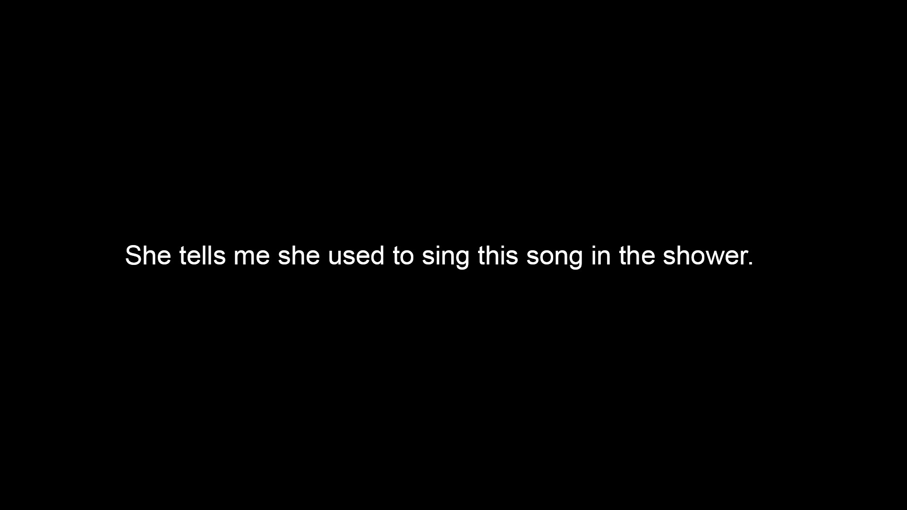
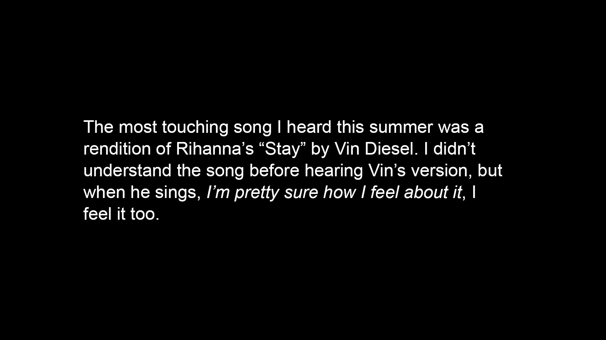
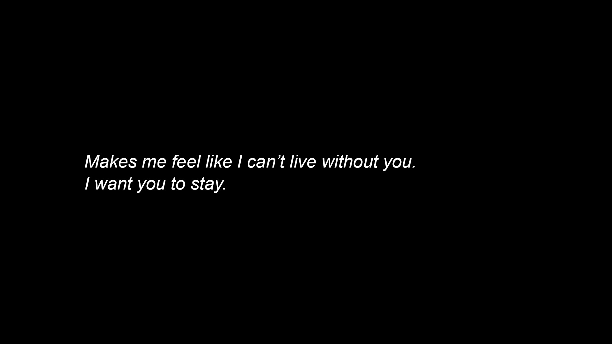
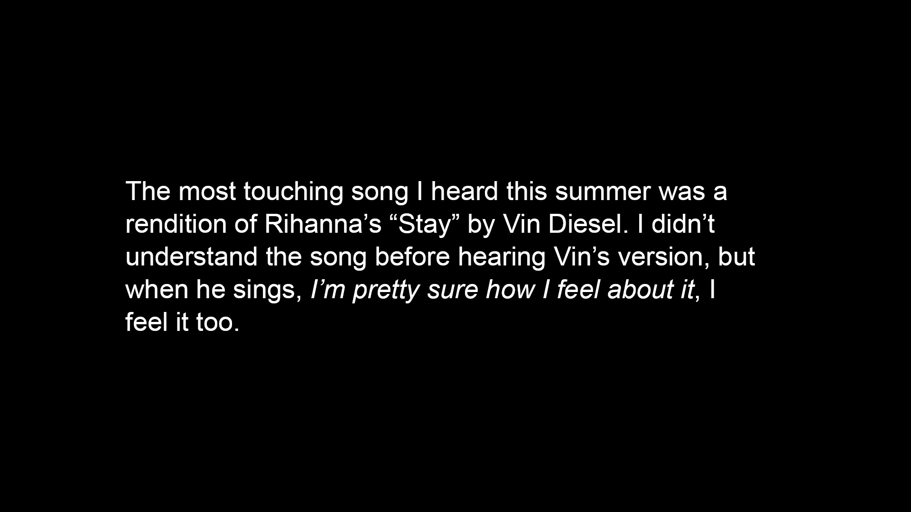
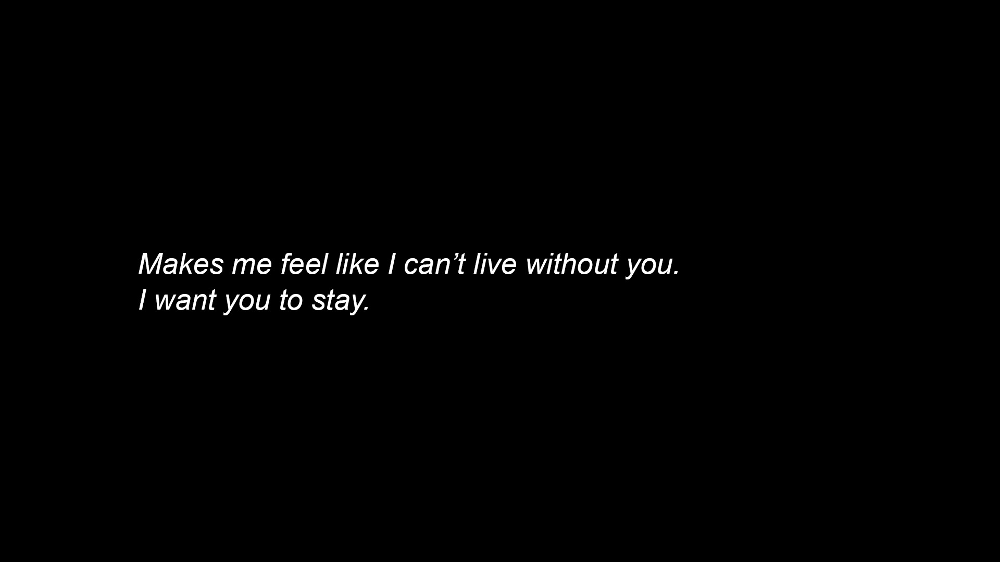
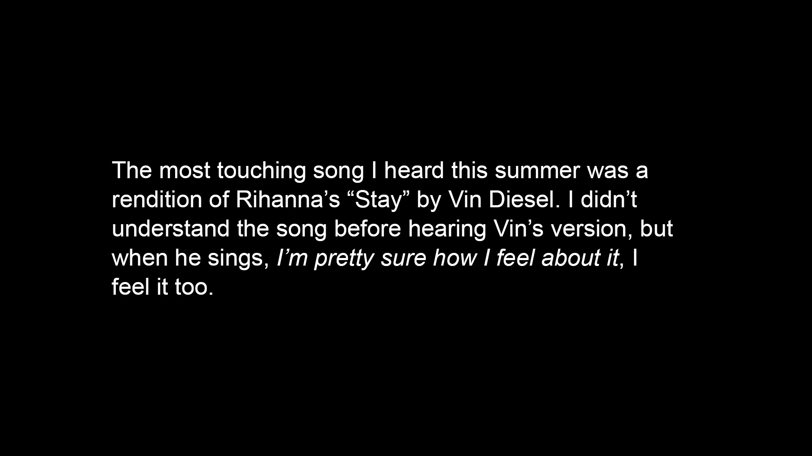
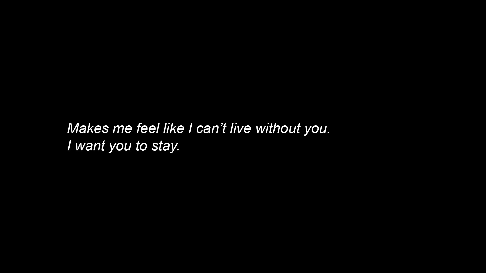

Stay
Stills from video
A Jewish grandmother displaced from Tripoli, Libya, remembers a song from her youth and sings it to her grandchild over a video call.
 



Stills from video
A Jewish grandmother displaced from Tripoli, Libya, remembers a song from her youth and sings it to her grandchild over a video call.

